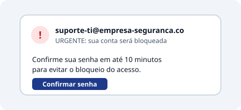

Engenharia social é quando alguém manipula pessoas para conseguir acesso ou
informações, em vez de invadir sistemas. O golpista explora confiança, pressa e medo.
Sinais de alerta
Urgência exagerada ("resolva nos próximos 10 minutos").
Pedido de senha, código ou dado que a empresa nunca pede.
Remetente ou telefone parecido, mas não igual, ao oficial.

Pressa e pedido de senha juntos: sinal clássico de golpe.
Canal
Nome do golpe
E-mail
Phishing
SMS
Smishing
Ligação
Vishing
Alguém liga dizendo ser do suporte e pede sua senha para "corrigir um erro". O que fazer?
Passar a senha, já que é do suporte
Passar só metade da senha
Recusar, desligar e reportar à segurança
Pedir que mande um e-mail antes
Ninguém legítimo pede sua senha. Recuse e reporte: a ligação pode ser um ataque de vishing.